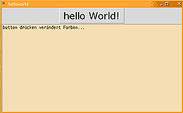

Tcl
Dieser Artikel wurde für die folgenden Ubuntu-Versionen getestet:
Ubuntu 14.04 Trusty Tahr
Zum Verständnis dieses Artikels sind folgende Seiten hilfreich:
Tcl ist eine um 1988 entwickelte Skriptsprache, bei der eine Grafikbibliothek enthalten ist. Daher ist die Bezeichnung meist Tcl/Tk. Tcl/Tk ist plattformunabhängig; es läuft unter Linux/Unix, Windows und Mac OS. Hinzu kommt, dass Anwendungen mittels sog. "Starkits" problemlos in "Executables" umgewandelt werden können, natürlich für jede Plattform separat und in vielen Fällen bleiben Executables unter 2 MB, ohne die Notwendigkeit einer installierten "Runtime" (wie das bei Java oder .NET der Fall ist).
Tcl kann unter Unix/Linux problemlos als Ersatz für Bash-Skripte genutzt werden, die bei anspruchsvolleren Skripten schnell von awk etc. Gebrauch machen müssen. Wenn es darum geht, mit Hilfe von Tcl/Tk kleine graphische Anwendungen zu bauen, so ist festzustellen, dass die Kompaktheit des Code dazu verleitet, auch größere GUI-Projekte damit umzusetzen (nicht ideal) oder dass Leute, die nicht "hauptberuflich" Programmierer sind, Tcl/Tk-Programme erstellen. Im zweiten Fall leidet oft die Qualität des Code (im Sinne von Konsistenz, Lesbarkeit, Wiederverwendbarkeit, usw.).
Installation¶
Tcl/Tk kann aus den offiziellen Paketquellen installiert werden (hier mit dem optionalen Paket expect - am Ende des Artikels gibt es einen Hinweis dazu) [1]:
tcl
tk (optional)
expect (optional)
 mit apturl
mit apturl
Paketliste zum Kopieren:
sudo apt-get install tcl tk expect
sudo aptitude install tcl tk expect
Es empfiehlt sich, ergänzend zur Installation das Paket
tclreadline (universe)
mit apturl
Paketliste zum Kopieren:
sudo apt-get install tclreadline
sudo aptitude install tclreadline
zu installieren. Dies bietet weitere Editiermöglichkeiten und eine Kommandohistorie in der tcl-Konsole (das standardmäßige Fehlen von readline-Support ist z.T. historisch und z.T. durch unterschiedliche Lizenzen bedingt - GPL vs. BSD). Nach der Installation von tclreadline muss die Datei ~/.tclshrc im Homeverzeichnis mit folgendem Inhalt erstellt werden [2]:
1 2 3 4 | if {$tcl_interactive} { package require tclreadline ::tclreadline::Loop } |
ActiveTcl¶
Hinweis!
Fremdsoftware kann das System gefährden.
Alternativ kann die Variante von ActiveState 
 installiert werden. Hier sind Demos und viele weitere Bibliotheken vorhanden oder können über ein apt-get-ähnliches Programm namens teacup nachgeladen werden. ActiveTcl ist das Standardpaket für die Windows-Umgebung.
installiert werden. Hier sind Demos und viele weitere Bibliotheken vorhanden oder können über ein apt-get-ähnliches Programm namens teacup nachgeladen werden. ActiveTcl ist das Standardpaket für die Windows-Umgebung.
Nachdem man eine Archivdatei heruntergeladen und entpackt hat, führt man das Installationsskript aus [3]:
cd ActiveTcl... sudo ./install.sh
Am Ende der Installation ist es empfehlenswert, die Umgebungsvariable PATH um /opt/ActiveTcl-8.5/bin zu erweitern. Eine Anleitung hierfür ist im entsprechenden Artikel zu finden. Anschließend hat man direkten Zugriff auf eine GUI-basierende Konsole tkcon mit (im Vergleich zu tclsh) erweiterter Funktionalität und Manpages (z.B. man canvas).
Ein Alternative ist, Symlinks zu erstellen (oder überschreiben):
sudo ln -fs /opt/ActiveTcl-8.5/bin/tclsh8.5 /usr/bin/tclsh sudo ln -fs /opt/ActiveTcl-8.5/bin/wish8.5 /usr/bin/wish
Einige Beispiele der teacup-Nutzung:
sudo /opt/ActiveTcl-8.5/bin/teacup list sudo /opt/ActiveTcl-8.5/bin/teacup install Expect
Der zweite Befehl installiert das Paket Expect. Dieses erlaubt das einfache Erstellen von Skripten, die interaktiv kommunizieren können, z.B. zur Herstellung von Dial-up-Verbindungen, automatische Logins via Telnet, SSH, usw.
Im Gegensatz zu expect aus den offiziellen Paketquellen fehlt dem Expect von ActiveState die Binary /usr/bin/expect. Stattdessen werden Skripte mit tclsh ausgeführt. Daher muss vor jeglichem Expect-spezifischen Code die Zeile
1 | package require Expect
|
eingefügt werden. Hier ein Beispielskript zum Aufbau einer Telnet-Verbindung:
1 2 3 4 5 6 7 | #!/usr/bin/tclsh package require Expect spawn telnet 192.168.0.1 expect "login:" send "root\n" .... |
Wird tcl über den Download von ActiveState installiert, so findet tclsh das Paket tclreadline nicht. Am einfachsten kann dies behoben werden, indem ein symbolischer Link in das alternative Installationsverzeichnis auf tclreadline gesetzt wird. Beispiel: tcl8.6 wurde manuell nach /opt/ActiveTcl-8.6/ installiert. tclreadline wurde vom Paketmanager nach /usr/share/tcltk/tclreadline2.1.0/ installiert. Dann setzt man den folgenden Link:
sudo ln -fs /usr/share/tcltk/tclreadline2.1.0/ /opt/ActiveTcl-8.6/lib
Verwendung¶
Hello World¶
Wie in jeder Programmiersprache führt auch in Tcl der Weg zu einem fertigen Programm über die Eingabe des Quelltexts in einem Editor. Für das einfache Beispielprogramm "Hello World" öffnet man einen Editor und speichert folgenden Quelltext in einem beliebigen Ordner (z.B. unter den Namen helloworld):
1 2 3 4 | #!/usr/bin/tclsh # Mein erstes Tcl-Programm puts "hello World!" |
Nachdem die Datei ausführbar gemacht wurde[4], erfolgt der Start durch den Befehl:
./helloworld
oder in der tclsh:
% source helloworld
 Ein Beispiel für eine grafische Variante:
1 2 3 4 5 6 7 8 9 10 | #!/usr/bin/wish # Mein erstes Tcl/Tk-Programm mit Texteditor button .b -text "hello World!" -font "Verdana 20" text .t -bg wheat # separater Schritt zum Sichtbarmachen (geometry manager) pack .b .t .t insert end "button drücken verändert Farben..." bind .b <Button-1> {.b config -bg orange -activebackground yellow} |
Der Aufruf des Programms geschieht auf die gleiche Weise wie zuvor. Das Programm kann auch über die Standard tclsh gestartet werden (siehe erste Zeile), aber dann muss das Tk-Package separat geladen werden, bevor erste Tk-Elemente kreiert werden:
1 | package require Tk
|
In diesem Sinne können eine Vielzahl von Bibliotheken nachgeladen werden.
In der tclsh-Konsole kann interaktiv an der GUI gebastelt werden, z.B.
% .t config -width 40
um die Breite des Texteditors zu halbieren.
Selbstverständlich bedarf es ein passendes Entwicklungsumfeld, wenn Programme während des "Laufens" optimiert und erweitert werden sollen, z.B. in Eclipse über ein DLTK-Plugin.
Sonstiges¶
Zusammen mit Tk bildet Tcl ein mächtiges Werkzeug zum Erstellen von GUI-Programmen in "Rapid Application Development"-Manier, weil der Code unwahrscheinlich kompakt sein kann. Leider wirkt die Optik unter Linux im Vergleich zu Tk in Windows oder Mac OS X etwas betagt. Im Rahmen von sog. "Themed Widgets" wird daran gearbeitet, dies abzustellen.
Befehle sehen so aus wie bei
bash, mit dem Unterschied, dass Kommandoverschachtelung in Tcl über [...] erfolgt.
Historisch gesehen ist eine der wichtigsten Bibliotheken für Tcl
Expect, mit welcher z.B. automatisierte Remote-Logins (unter Zuhilfenahme von z.B. telnet oder SSH) durchgeführt werden können. Es können auch Programme, die über die Kommandozeile gesteuert werden, vollautomatisch getestet werden. Expect öffnet dazu eine bidirektionale Pipeline, die keinerlei Blocking-Problemen ausgesetzt ist.

- Erstellt mit Inyoka
-
 2004 – 2017 ubuntuusers.de • Einige Rechte vorbehalten
2004 – 2017 ubuntuusers.de • Einige Rechte vorbehalten
Lizenz • Kontakt • Datenschutz • Impressum • Serverstatus -
Serverhousing gespendet von